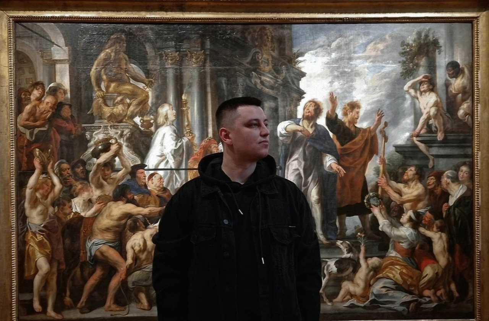
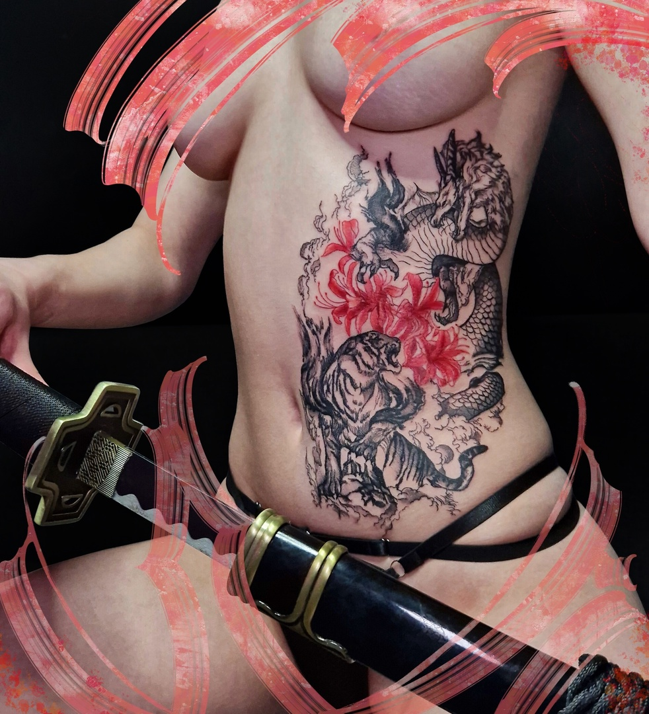
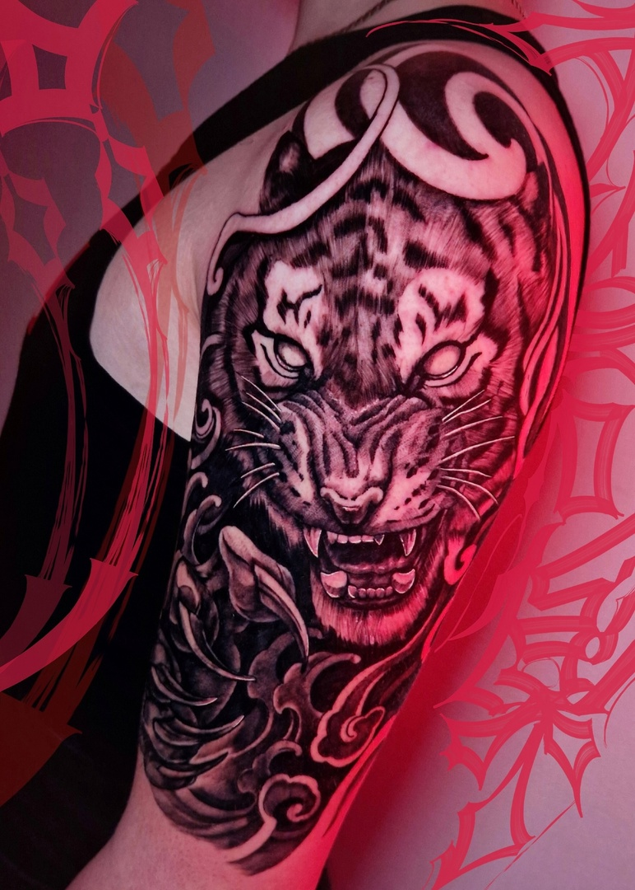

Мы поговорили с нашим учеником Василием Матрюком, тату-мастером из Екатеринбурга.
Как Василий шел к своему результату, читай в интервью.

— Расскажи, что было до курса, какой средний доход был в месяц? Сколько клиентов?
— До курса, средний доход был 40-50к (3-5 клиентов)
После курса, каждый год растет средний доход. В этом году можно уже утвердить, что в среднем 150к (12-16 клиентов)
— Какие сложности были во время обучения на нашем курсе? Насколько сложно было учиться? За сколько прошел обучение?
— Сложностей не было, все ясно и понятно, только время для реализации. (Что бы все красиво сделать). Прошел за 1-1.5 месяца
— А как думаешь с куратором было бы быстрее? Больше мотивации? пользы?
— Тут не подскажу, у самого куча мотивации, а в техническом вопросе не сложно разобраться.
— Какие сейчас действия делаешь для привлечения клиентов? Как часто пишешь посты? Запускаешь ли рекламу?
— Ух, сейчас больше просто посты выкладываю, большой акцент хочется на видео контенте сделать.
Рекламу уже запускаю изредка. Больше пригодится для новых проектов. Выделить время надо и заняться CRMкой.

— А как тебя сейчас находят? С постов приходят или уже просто сарафан работает?
— С постов и сарафан) По геолокации находят так же. Ух, куча всего)
— А можешь поделиться, как изменилась жизнь, когда увеличился доход? Может что-то купил себе? Съездил в путешествие? Что-то смог сделать, чего раньше не мог позволить себе?)
— Хы, каких-то вау покупок не было. Больше покупки были связаны со студией. Крутые расходники. Ну и просто накапливание капитала. Теперь у меня больше возможностей заняться плюс еще каким-то делом, где смело можно рискнуть временем, деньгами и не переживать за деньги)
— То есть в развитие дальнейшее, креатив, удовольствие?
— Да, в дальнейшее развитие, а то аппетиты большие) Но пока оставлю их в секрете))
— Хорошо) Подождем когда будешь готов рассказать. Остался только вопрос, сколько сейчас зарабатываешь? Сколько в среднем в месяц? Сколько клиентов? А вот примерно сколько за год было прошедший заработано?
— Прошедший не смогу подсказать, не анализировал, ну и первые пол года для всех были экстремальные.
За этот год, так как он к концу подходит, больше 1 миллиона чистыми по сути есть) Размыто говорю, так как не садился за подсчеты. Уже после внедрения Срмки можно будет собирать полную аналитику.
— Но вот эти цифры реальны: " В этом году можно уже утвердить, что в среднем 150к (12-16 клиентов)"?
— Да, даже побольше средние цифры будут))

— Скажи, а какие сомнения у тебя были когда ты шел на курс?
— Естественно опасения, что не поможет или в информации будет много воды. Но все круто, безмерно благодарен и рад)
— Спасибо тебе за ответы) УДАЧИ и тройного роста в следующем году!
— Спасибо, и вам))